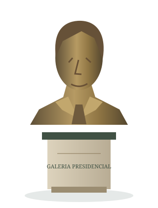

A história tem voz.
Uma viagem pela República, contada por suas personagens.
Entre, observe as esculturas e ouça diferentes momentos do Brasil.
36 presidentes · 6 salas históricas
Retratos históricos, bustos estilizados e narração educativa.
Conheça o percurso ↓
Lula animado · ouvir e ver ↗

Há muitas formas
de conhecer a história.
A sala 3D requer WebGL. Fichas, roteiros, busca e quiz continuam disponíveis aqui.
Conheça quem ocupou
a Presidência.
Selecione um nome para ler e ouvir sua trajetória. Retratos históricos de fontes públicas, com origem e licença. Compare cada fotografia ao estudo provisório de seu busto.
Nenhum presidente encontrado. Tente outro nome ou período.
Um país, diferentes momentos.
Transições e sucessões.
Pessoas, mandatos e numeração oficial não são a mesma contagem. Os 36 registros individuais incluem interinos. Governos coletivos e pessoas que não exerceram a Presidência estão apresentados separadamente.